Dit is een website over Geiten.(Klik op de foto's voor meer informatie.)
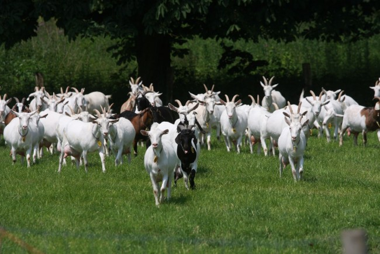
Wat eet een geit?
Soorten geiten:
| Naam: | Extra info: | ||
|---|---|---|---|
| Boergeit | 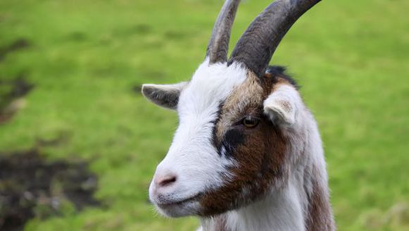 | Nubische geit | 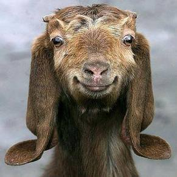 |
| Saanengeit | 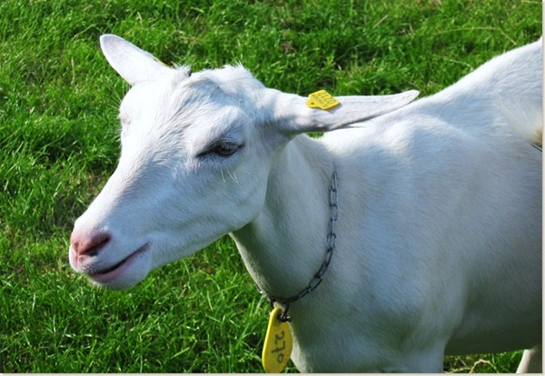 | West-Afrikaanse dwerggeit | 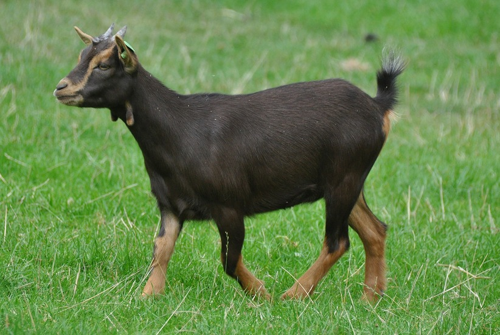 |
| Toggenburger |

|
Lamancha | 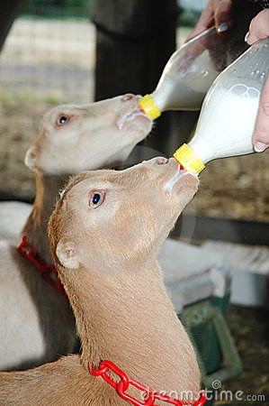 |
| Alpine geit |

|
Oberhasli | 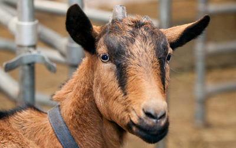 |
| Angora geit | 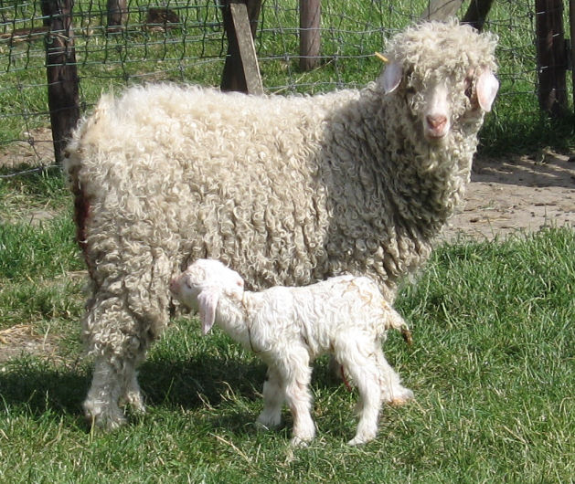 | Myotonische geit |

|
| Kiko geit |
 |
Pygora | 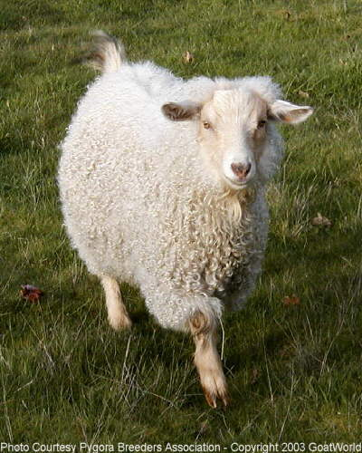 |
| Jamnapari |
 |
Beetal | 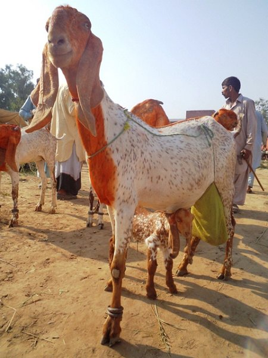 |
| Golden Guernsey |  |
Spanish goat |  |
| Sable saanen |  |
Murciano granadina |  |
| Kamori | 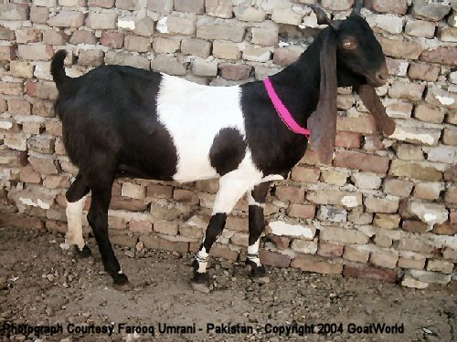 | Verata | 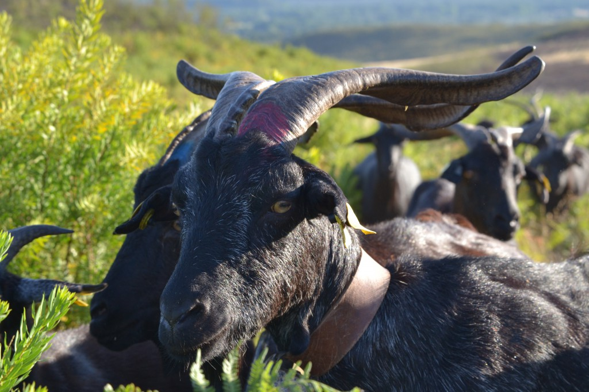 |
| Nigora |  |
Wallische geit |  |
| Kinder goat | 
| Peacock Goat | 
|
| Kalahari red |  |
St Gallen Booted |  |
| Bagot | 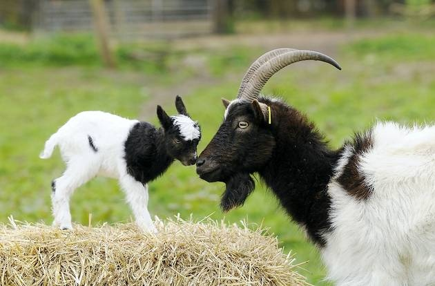 | Australian cashmere goat |  |
| Jining grey |  |
Hexi cashmere |  |
| Landgeit | 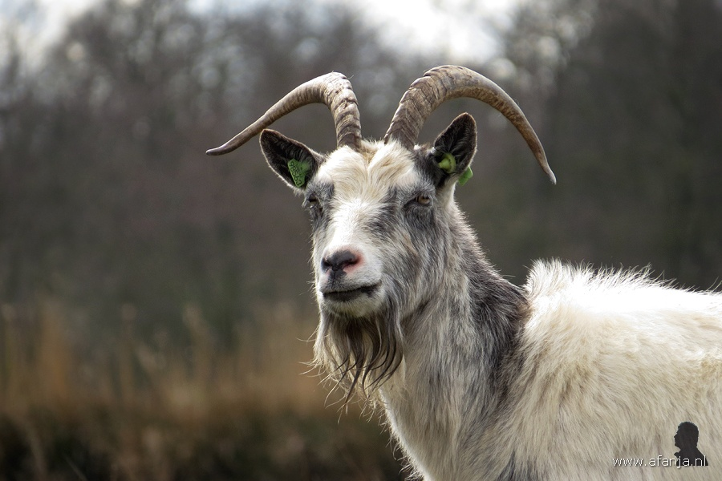 | Grisons Striped |  |
| Rove geit |  |
Billie | 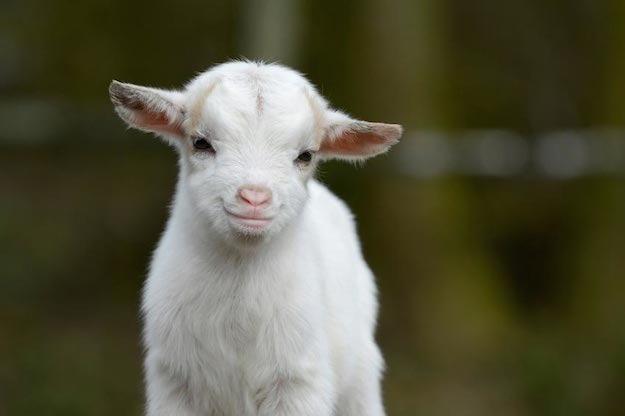 |